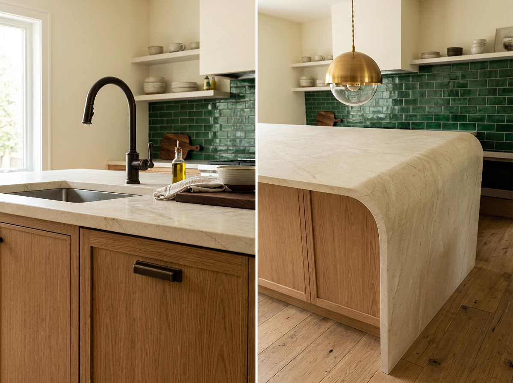

Kitchens that earn the gut.
A kitchen renovation isn't about new cabinet boxes. It's about how light moves through the room at 7 AM and 7 PM, where the trash actually goes, and whether the island can fit four people pulling stools out at the same time. We design from how you cook on a random Tuesday, then layer the finishes on top.